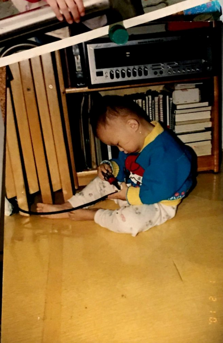

Welcome to Anita's Strange Lab
via GIPHY
I have created this website to introduce to my strange lab, where I like to learn, experiment and create
wonderful things.
I enjoy learning new things, personal and technical challenges.
It is what drives me to do create and develop things.
Please stick around, explore my lovely website! Lots of cute gifs I promise 💖🤣
🔗 Quick links
 TWITTER
TWITTER
 LINKEDIN
LINKEDIN
📧 parkanita34@gmail.com
📞 +64221258830
My Journey
I think it is extremly easy when anyone is faced with a hard challenge, to feel immediately hopeless and turn
to fixed mindset.
It is incredibly easy to just think "I am not good enough", "I am not smart enough", "I will never make it".
If anyone asks me what game character, or some kind of character that already exist would I be if I were to
describe myself, I would say Kirby.
Kirby is stubby, round character who is energetic, despite to the fact it has no legs and only feet.
I vision myself as such character because no matter what I may lack in, I try to do my best with what I
have. With what I have, I try to learn, build upon it and achieve my goals! (I mean, look how enthusiastic
Kirby looks in this gif :D)
I was born in Seoul South Korea in 1999, a place that is crowded, and at the very center of a city.

Image source
I was a very curious and happy child. I was often found either breaking things, putting some guests kyes
into my dads speakers so they had to stay at our house for four hours, unable to return home, or locking the
door from inside so my mum couldn't get in again.
I would also take on what my dad was fixing once he left his spot, to see if I can fix it.

I was using a very small screw driver my dad was using, and seeing if I could get the cord adapter working myself at the age of two. I was very focused XD
I really enjoying fixing, creating things since I was a kid, and also doing things myself! I really like taking ownership of a project and creating something that I can call - "I did this myself".
via GIPHY
I moved to New Zealand at the age of 8, and been living in NZ every since! I have been living in New Zealand for over 12 years now, so I feel more at home definitely in New Zealand compared to Korea.
When I first came to New Zealand, I had no idea how to speak English but now I am fluent in English and probably speak better than my mother tongue :D
{kind=link}